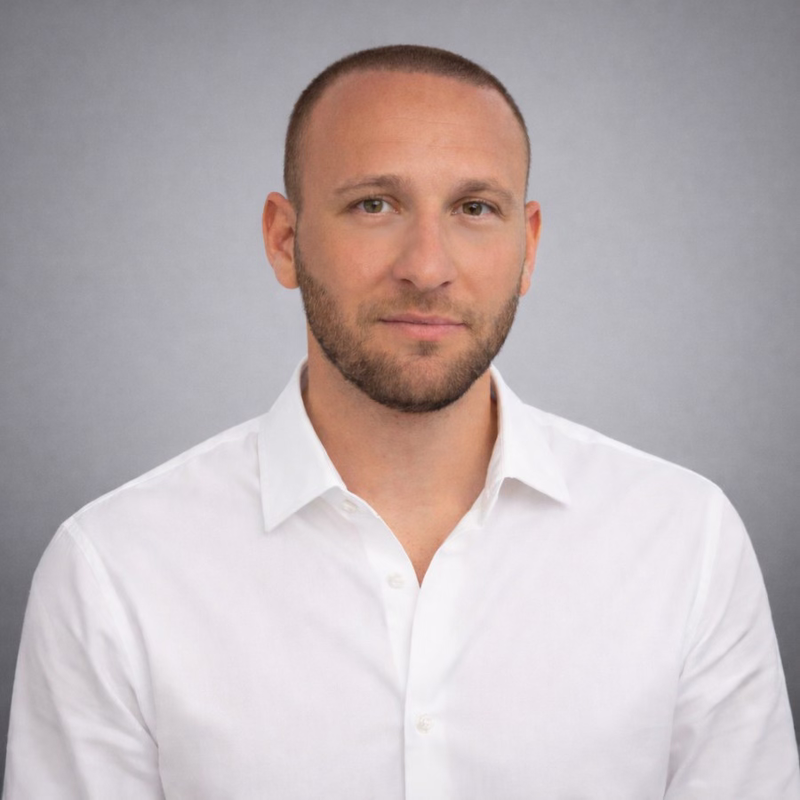

I'm an AI researcher and PhD student in Statistics at Columbia University, working with Liam Paninski at the Zuckerman Institute. I take AI from paper to production: 3D computer vision and foundation models for neuroscience, continual learning and parameter-efficient fine-tuning, and mechanistic interpretability of LLMs. My work includes a NeurIPS 2026 Oral, CVPR and AAAI workshop oral and spotlight talks, and Lightning Pose 3D, an open-source framework adopted by labs worldwide. I also earned my BA and MA at Columbia.
Alongside my PhD I was an AI Researcher at Goldman Sachs, building LLM systems for entity resolution at billion-record scale, led applied AI at Nanose Medical on breath-based disease diagnostics, and worked on frontier-model evaluation with the GenAI team at Scale AI.
Before academia I played professional soccer in Israel, including for the Israel national youth teams, before joining the team at UNC Chapel Hill on a full scholarship.

Academic email: lenny.aharon (at) columbia.edu · Personal email: lenny.aharon5 (at) gmail.com
GitHub · LinkedIn · Twitter · Google Scholar
PhD, Statistics, Columbia University — Expected Mar 2027
Advisor: Liam Paninski
MA, Statistics, Columbia University — May 2025
BA, Mathematics-Statistics & Concentration in Economics, Columbia University — Jun 2023
Summa Cum Laude, Phi Beta Kappa, GS Honors Society
University of North Carolina at Chapel Hill — Jun 2019 – May 2021
NCAA Division 1 Men's Soccer, full athletic scholarship
Graduate Researcher, Paninski Lab, Columbia University — Jul 2024 – Present
AI Researcher (Summer Associate), Goldman Sachs — May 2026 – Aug 2026
Head of AI, Nanose Medical — Sep 2025 – Jul 2026
Applied AI Researcher, Nanose Medical — Jul 2024 – Sep 2025
Human Frontier Collective Specialist – GenAI, Scale AI — May 2025 – Sep 2025
Research Assistant,
Department of Statistics, Columbia University
— Jan 2023 – Sep 2024
Functional time series and stochastic processes in function spaces.
Investment and Merchant Banking Intern, Lion Tree LLC — May 2022 – Aug 2022
Professional Soccer Player, Israel
— Dec 2016 – Jun 2019
50+ club appearances, 15+ Israel National Team appearances, 3 national championships.
a16z speedrun Global Founder Sprint — Oct 2026
Fellow,
Thinking About Thinking
— Mar 2026 – Present
Invitation-only fellowship for researchers working across AI, neuroscience, and the science of intelligence.